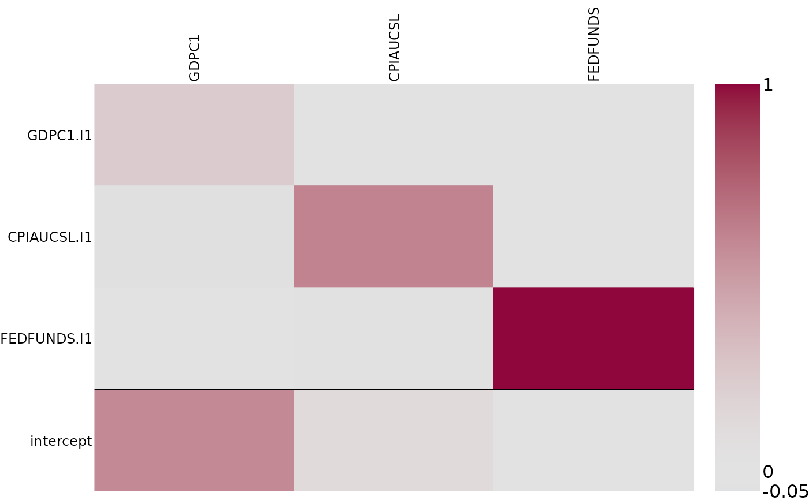
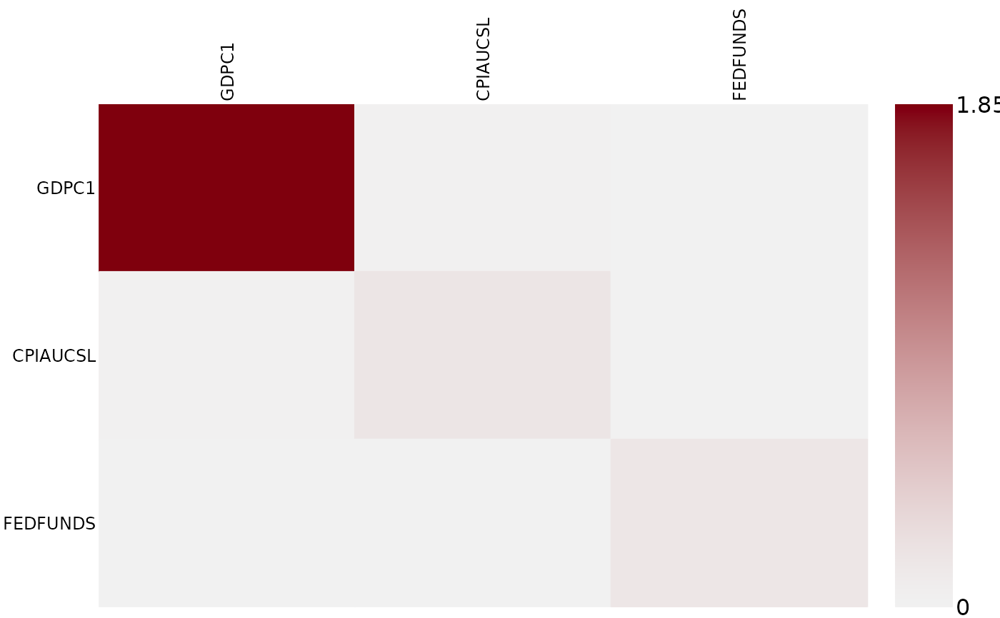

Posterior heatmaps for VAR coefficients or variance-covariance matrices
Source:R/plots.R
posterior_heatmap.RdPosterior heatmaps for VAR coefficients or variance-covariance matrices
Usage
posterior_heatmap(
x,
FUN,
...,
colorbar = TRUE,
xlabels = NULL,
ylabels = NULL,
add_numbers = FALSE,
zlim = NULL,
colspace = NULL,
main = "",
cex.axis = 0.75,
cex.colbar = 1,
cex.numbers = 1,
asp = NULL
)Arguments
- x
An array of dimension \(a \times b \times draws\), where \(a \times b\) is the dimension of the parameter to visualize and draws is the number of posterior draws.
- FUN
The summary function to be applied to margins
c(1,2)of x. E.g."median","mean","IQR","sd"or"var".apply(x, 1:2, FUN, ...)must return a matrix!- ...
optional arguments to
FUN.- colorbar
logical indicating whether to display a colorbar or not. Default is
TRUE.- xlabels
ylabels=NULL, the default, indicates that the names of the dependent variables will be displayed.ylabels=""indicates that no ylabels will be displayed.- ylabels
xlabels=NULL, the default, indicates that the labels of all covariables (the lagged values of the dependent variables) will be displayed.xlabels="lags"indicates that only the lags will be marked.xlabels=""indicates that no ylabels are displayed.- add_numbers
logical.
add_numbers=TRUE, the default indicates that the actual values ofsummarywill be displayed.- zlim
numeric vector of length two indicating the minimum and maximum values for which colors should be plotted. By default this range is determined by the maximum of the absolute values of the selected summary.
- colspace
Optional argument.
- main
main title for the plot.
- cex.axis
The magnification to be used for y-axis annotation relative to the current setting of cex.
- cex.colbar
The magnification to be used for colorbar annotation relative to the current setting of cex.
- cex.numbers
The magnification to be used for the actual values (if
add_numbers=TRUE) relative to the current setting of cex.- asp
aspect ratio.
Examples
# Access a subset of the usmacro_growth dataset
data <- usmacro_growth[,c("GDPC1", "CPIAUCSL", "FEDFUNDS")]
# Estimate a model
mod <- bvar(100*data, sv_keep = "all", quiet = TRUE)
# Extract posterior draws of VAR coefficients
phi_post <- coef(mod)
# Visualize posterior median of VAR coefficients
posterior_heatmap(phi_post, median)

# Extract posterior draws of variance-covariance matrices (for each point in time)
sigma_post <- vcov(mod)
# Visualize posterior interquartile-range of variance-covariance matrix of the first observation
posterior_heatmap(sigma_post[1,,,], IQR)
